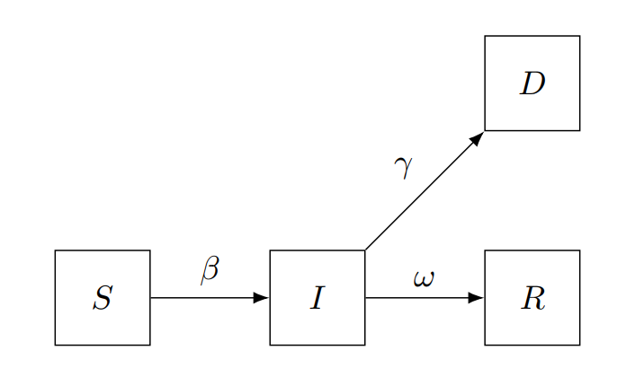
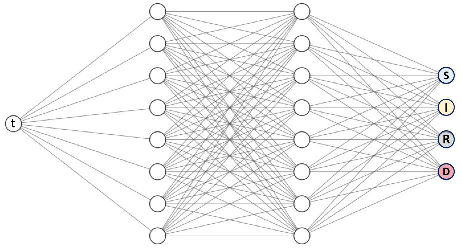

Application to Disease Dynamics#
# !pip install deepxde # Run this line if you are in Google Colab
import re
import numpy as np
import pandas as pd
import matplotlib.pyplot as plt
import seaborn as sns
import deepxde as dde
from deepxde.backend import tf
from scipy.integrate import solve_ivp
sns.set_theme(style="whitegrid")
---------------------------------------------------------------------------
ModuleNotFoundError Traceback (most recent call last)
Cell In[2], line 5
3 import pandas as pd
4 import matplotlib.pyplot as plt
----> 5 import seaborn as sns
6 import deepxde as dde
8 from deepxde.backend import tf
ModuleNotFoundError: No module named 'seaborn'
SIRD compartmental models are mathematical models used to describe the spread of infectious diseases in a population. The name SIRD stands for Susceptible, Infected, Recovered, and Dead, which are the four compartments that individuals can be classified into based on their disease status.
In this model, individuals can move from one compartment to another over time, based on the parameters of the model. Specifically, individuals can move from the susceptible compartment to the infected compartment if they are exposed to the disease, from the infected compartment to the recovered compartment if they recover from the disease, and from the infected compartment to the dead compartment if they die from the disease.
The SIRD model assumes that once an individual recovers from the disease, they are immune to future infections, and that the rate of transmission of the disease is proportional to the number of susceptible individuals and the number of infected individuals in the population.
These models are used to predict the spread and impact of infectious diseases, and can be used to evaluate different intervention strategies, such as vaccination programs and social distancing measures, to control the spread of the disease.

This model leads to the following equations
where
Variable |
Description |
|---|---|
\(S(t)\) |
Number of susceptible individuals |
\(I(t)\) |
Number of symptomatically infected individuals |
\(R(t)\) |
Number of removed individuals |
\(D(t)\) |
Number of deceased individuals |
Parameter |
Description |
|---|---|
\(\beta\) |
Transmission rate |
\(\omega\) |
Recovery rate |
\(\gamma\) |
Mortality rate |
Synthetic data#
Let’s build some synthetic data to have more control about the errors of our model. Consider a population of 10.000.000 people and only one person infected.
N = 1e7
S_0 = N - 1
I_0 = 1
R_0 = 0
D_0 = 0
y0 = [S_0, I_0, R_0, D_0] # Initial conditions vector
beta = 0.5
omega = 1 / 14
gamma = 0.1 / 14
parameters_real = {
"beta": beta,
"omega": omega,
"gamma": gamma,
}
We will use the same approach than the last module using a numerical solver in order to create the data.
def generate_data(
t_array,
y0,
):
def func(t, y):
S, I, R, D = y
dS_dt = - beta * S / N * I
dI_dt = beta * S / N * I - omega * I - gamma * I
dR_dt = omega * I
dD_dt = gamma * I
return np.array([dS_dt, dI_dt, dR_dt, dD_dt])
t_span = (t_array[0], t_array[-1])
sol = solve_ivp(func, t_span, y0, t_eval=t_array)
return sol.y.T
On the other hand, for this example purpose we will take a time span of three months, which is approximately 120 days. You can see the output is an array of 4 columns and 120 rows.
n_days = 120 # 3 months
t_train = np.arange(0, n_days, 1)[:, np.newaxis]
y_train = generate_data(np.ravel(t_train), y0)
y_train.shape
(120, 4)
Now we can explore the simulated data. We are using pandas (pd) and seaborn (sns) packages for getting a better plot, don’t worry so much about but in simple words pandas allows use to get a more general structure for data analysis, pd.DataFrame, for instance, we can give each column a name, S, I, R, D, respectively. While seaborn is a plotting tool build on top of matplotlib, it works better with pandas and we can get really good results with a few lines of code.
model_name = "SIRD"
populations_names = list(model_name)
data_real = (
pd.DataFrame(y_train, columns=populations_names)
.assign(time=t_train)
.melt(id_vars="time", var_name="status", value_name="population")
)
fig, ax = plt.subplots(figsize=(10, 4))
sns.lineplot(
data=data_real,
x="time",
y="population",
hue="status",
legend=True,
linestyle="dashed",
ax=ax
)
ax.set_title(f"{model_name} model - Training Data")
fig.show()
/tmp/ipykernel_27695/420465252.py:21: UserWarning: Matplotlib is currently using module://matplotlib_inline.backend_inline, which is a non-GUI backend, so cannot show the figure.
fig.show()
Disease Informed Neural Networks#
Varibles#
Now let’s start with parameter prediction. Define a initial guess for those parameters we want to estimate.
_beta = dde.Variable(0.0)
_omega = dde.Variable(0.0)
_gamma = dde.Variable(0.0)
ODE Residuals#
Residuals of this system are
def ode(t, y):
S = y[:, 0:1]
I = y[:, 1:2]
R = y[:, 2:3]
D = y[:, 3:4]
dS_dt = dde.grad.jacobian(y, t, i=0)
dI_dt = dde.grad.jacobian(y, t, i=1)
dR_dt = dde.grad.jacobian(y, t, i=2)
dD_dt = dde.grad.jacobian(y, t, i=3)
return [
dS_dt - ( - _beta * S / N * I ),
dI_dt - ( _beta * S / N * I - _omega * I - _gamma * I ),
dR_dt - ( _omega * I ),
dD_dt - ( _gamma * I )
]
Initial Conditions#
# Geometry
geom = dde.geometry.TimeDomain(t_train[0, 0], t_train[-1, 0])
# Boundaries
def boundary(_, on_initial):
return on_initial
# Initial conditions
S_0, I_0, R_0, D_0 = y_train[0, :]
ic_S = dde.icbc.IC(geom, lambda x: S_0, boundary, component=0)
ic_I = dde.icbc.IC(geom, lambda x: I_0, boundary, component=1)
ic_R = dde.icbc.IC(geom, lambda x: R_0, boundary, component=2)
ic_D = dde.icbc.IC(geom, lambda x: D_0, boundary, component=3)
Observed Data#
observed_S = dde.icbc.PointSetBC(t_train, y_train[:, 0:1], component=0)
observed_I = dde.icbc.PointSetBC(t_train, y_train[:, 1:2], component=1)
observed_R = dde.icbc.PointSetBC(t_train, y_train[:, 2:3], component=2)
observed_D = dde.icbc.PointSetBC(t_train, y_train[:, 3:4], component=3)
Data Model#
data = dde.data.PDE(
geom,
ode,
[
ic_S,
ic_I,
ic_R,
ic_D,
observed_S,
observed_I,
observed_R,
observed_D,
],
num_domain=256,
num_boundary=2,
anchors=t_train,
)
Neural Network#
We need to define the structure of the network, once again, there is just one input (time) but there are four neurons in the last layer since we are working on a system of four equations.

neurons = 64
layers = 3
activation = "relu"
net = dde.nn.FNN([1] + [neurons] * layers + [4], activation, "Glorot uniform")
Training#
variable_filename = "sird_variables.dat"
variable = dde.callbacks.VariableValue(
[_beta, _omega, _gamma],
period=100,
filename=variable_filename
)
model = dde.Model(data, net)
model.compile(
"adam",
lr=1e-3,
external_trainable_variables=[_beta, _omega, _gamma]
)
losshistory, train_state = model.train(
iterations=30000,
display_every=5000,
callbacks=[variable]
)
dde.saveplot(losshistory, train_state, issave=False, isplot=True)
Compiling model...
Warning: For the backend tensorflow.compat.v1, `external_trainable_variables` is ignored, and all trainable ``tf.Variable`` objects are automatically collected.
Building feed-forward neural network...
'build' took 0.022074 s
/home/alonsolml/mambaforge/envs/nc-book/lib/python3.10/site-packages/deepxde/nn/tensorflow_compat_v1/fnn.py:103: UserWarning: `tf.layers.dense` is deprecated and will be removed in a future version. Please use `tf.keras.layers.Dense` instead.
return tf.layers.dense(
2023-03-15 16:43:46.015441: I tensorflow/core/platform/cpu_feature_guard.cc:193] This TensorFlow binary is optimized with oneAPI Deep Neural Network Library (oneDNN) to use the following CPU instructions in performance-critical operations: AVX2 AVX512F AVX512_VNNI AVX512_BF16 FMA
To enable them in other operations, rebuild TensorFlow with the appropriate compiler flags.
2023-03-15 16:43:46.016381: I tensorflow/compiler/xla/stream_executor/cuda/cuda_gpu_executor.cc:967] could not open file to read NUMA node: /sys/bus/pci/devices/0000:01:00.0/numa_node
Your kernel may have been built without NUMA support.
2023-03-15 16:43:46.016428: I tensorflow/compiler/xla/stream_executor/cuda/cuda_gpu_executor.cc:967] could not open file to read NUMA node: /sys/bus/pci/devices/0000:01:00.0/numa_node
Your kernel may have been built without NUMA support.
2023-03-15 16:43:46.016456: I tensorflow/compiler/xla/stream_executor/cuda/cuda_gpu_executor.cc:967] could not open file to read NUMA node: /sys/bus/pci/devices/0000:01:00.0/numa_node
Your kernel may have been built without NUMA support.
2023-03-15 16:43:46.983115: I tensorflow/compiler/xla/stream_executor/cuda/cuda_gpu_executor.cc:967] could not open file to read NUMA node: /sys/bus/pci/devices/0000:01:00.0/numa_node
Your kernel may have been built without NUMA support.
2023-03-15 16:43:46.983185: I tensorflow/compiler/xla/stream_executor/cuda/cuda_gpu_executor.cc:967] could not open file to read NUMA node: /sys/bus/pci/devices/0000:01:00.0/numa_node
Your kernel may have been built without NUMA support.
2023-03-15 16:43:46.983190: I tensorflow/core/common_runtime/gpu/gpu_device.cc:1700] Could not identify NUMA node of platform GPU id 0, defaulting to 0. Your kernel may not have been built with NUMA support.
2023-03-15 16:43:46.983213: I tensorflow/compiler/xla/stream_executor/cuda/cuda_gpu_executor.cc:967] could not open file to read NUMA node: /sys/bus/pci/devices/0000:01:00.0/numa_node
Your kernel may have been built without NUMA support.
2023-03-15 16:43:46.983221: W tensorflow/core/common_runtime/gpu/gpu_bfc_allocator.cc:42] Overriding orig_value setting because the TF_FORCE_GPU_ALLOW_GROWTH environment variable is set. Original config value was 0.
2023-03-15 16:43:46.983241: I tensorflow/core/common_runtime/gpu/gpu_device.cc:1613] Created device /job:localhost/replica:0/task:0/device:GPU:0 with 7369 MB memory: -> device: 0, name: NVIDIA GeForce RTX 3080, pci bus id: 0000:01:00.0, compute capability: 8.6
'compile' took 1.370994 s
Initializing variables...
Training model...
2023-03-15 16:43:47.370654: I tensorflow/compiler/mlir/mlir_graph_optimization_pass.cc:357] MLIR V1 optimization pass is not enabled
2023-03-15 16:43:47.412209: I tensorflow/compiler/xla/service/service.cc:173] XLA service 0x7f2348009350 initialized for platform CUDA (this does not guarantee that XLA will be used). Devices:
2023-03-15 16:43:47.412232: I tensorflow/compiler/xla/service/service.cc:181] StreamExecutor device (0): NVIDIA GeForce RTX 3080, Compute Capability 8.6
2023-03-15 16:43:47.449645: I tensorflow/tsl/platform/default/subprocess.cc:304] Start cannot spawn child process: Permission denied
2023-03-15 16:43:47.484254: I tensorflow/compiler/jit/xla_compilation_cache.cc:477] Compiled cluster using XLA! This line is logged at most once for the lifetime of the process.
2023-03-15 16:43:47.532437: I tensorflow/compiler/mlir/tensorflow/utils/dump_mlir_util.cc:268] disabling MLIR crash reproducer, set env var `MLIR_CRASH_REPRODUCER_DIRECTORY` to enable.
Step Train loss Test loss Test metric
0 [9.38e-04, 2.81e-02, 8.57e-04, 8.29e-05, 1.00e+14, 1.00e+00, 0.00e+00, 0.00e+00, 3.01e+13, 3.64e+12, 4.21e+13, 4.21e+11] [9.38e-04, 2.81e-02, 8.57e-04, 8.29e-05, 1.00e+14, 1.00e+00, 0.00e+00, 0.00e+00, 3.01e+13, 3.64e+12, 4.21e+13, 4.21e+11] []
2023-03-15 16:43:48.270671: I tensorflow/compiler/xla/stream_executor/cuda/cuda_blas.cc:630] TensorFloat-32 will be used for the matrix multiplication. This will only be logged once.
5000 [6.41e+07, 1.65e+06, 3.59e+07, 9.98e+05, 2.89e+13, 2.67e+11, 1.18e+13, 6.48e+10, 1.95e+13, 2.88e+12, 1.99e+13, 2.37e+11] [6.41e+07, 1.65e+06, 3.59e+07, 9.98e+05, 2.89e+13, 2.67e+11, 1.18e+13, 6.48e+10, 1.95e+13, 2.88e+12, 1.99e+13, 2.37e+11] []
10000 [3.33e+09, 3.35e+09, 1.52e+09, 5.02e+07, 4.24e+06, 1.07e+10, 7.92e+09, 6.81e+07, 7.78e+11, 1.19e+12, 1.10e+12, 1.01e+10] [3.33e+09, 3.35e+09, 1.52e+09, 5.02e+07, 4.24e+06, 1.07e+10, 7.92e+09, 6.81e+07, 7.78e+11, 1.19e+12, 1.10e+12, 1.01e+10] []
15000 [2.24e+09, 2.29e+09, 1.73e+09, 3.16e+07, 7.25e+07, 1.90e+08, 4.92e+08, 3.24e+05, 1.95e+10, 1.12e+10, 4.37e+10, 1.29e+08] [2.24e+09, 2.29e+09, 1.73e+09, 3.16e+07, 7.25e+07, 1.90e+08, 4.92e+08, 3.24e+05, 1.95e+10, 1.12e+10, 4.37e+10, 1.29e+08] []
20000 [3.36e+08, 4.77e+08, 1.35e+08, 4.88e+06, 1.04e+06, 3.32e+06, 8.10e+06, 6.67e+04, 1.29e+08, 2.84e+08, 4.83e+08, 1.27e+07] [3.36e+08, 4.77e+08, 1.35e+08, 4.88e+06, 1.04e+06, 3.32e+06, 8.10e+06, 6.67e+04, 1.29e+08, 2.84e+08, 4.83e+08, 1.27e+07] []
25000 [2.63e+08, 3.49e+08, 8.63e+07, 3.61e+06, 3.17e+05, 1.35e+06, 2.61e+06, 7.67e+04, 5.62e+07, 1.32e+08, 1.25e+08, 8.88e+06] [2.63e+08, 3.49e+08, 8.63e+07, 3.61e+06, 3.17e+05, 1.35e+06, 2.61e+06, 7.67e+04, 5.62e+07, 1.32e+08, 1.25e+08, 8.88e+06] []
30000 [2.35e+08, 2.81e+08, 6.42e+07, 2.70e+06, 4.16e+06, 1.09e+06, 9.76e+05, 3.75e+05, 4.65e+07, 9.18e+07, 8.50e+07, 5.27e+06] [2.35e+08, 2.81e+08, 6.42e+07, 2.70e+06, 4.16e+06, 1.09e+06, 9.76e+05, 3.75e+05, 4.65e+07, 9.18e+07, 8.50e+07, 5.27e+06] []
Best model at step 30000:
train loss: 8.18e+08
test loss: 8.18e+08
test metric: []
'train' took 33.101049 s
We can plot training and predicted data in the sample picture. You will notice it is almost perfect, which makes sense, since we are predicting data we already know.
t_pred = np.arange(0, n_days, 1)[:, np.newaxis]
y_pred = model.predict(t_pred)
data_pred = (
pd.DataFrame(y_pred, columns=populations_names, index=t_pred.ravel())
.rename_axis("time")
.reset_index()
.melt(id_vars="time", var_name="status", value_name="population")
)
g = sns.relplot(
data=data_pred,
x="time",
y="population",
hue="status",
kind="line",
aspect=2,
height=4
)
sns.scatterplot(
data=data_real,
x="time",
y="population",
hue="status",
ax=g.ax,
legend=False
)
(
g.set_axis_labels("Time", "Population")
.tight_layout(w_pad=1)
)
g._legend.set_title("Status")
g.fig.subplots_adjust(top=0.9)
g.fig.suptitle(f"SIRD model estimation")
# plt.savefig("sird_prediction.png", dpi=300)
plt.show()
Learning History#
Let’s study how well or bad this model learned the parameters of our infectious disease system.
lines = open(variable_filename, "r").readlines()
raw_parameters_pred_history = np.array(
[
np.fromstring(
min(re.findall(re.escape("[") + "(.*?)" + re.escape("]"), line), key=len),
sep=",",
)
for line in lines
]
)
iterations = [int(re.findall("^[0-9]+", line)[0]) for line in lines]
parameters_pred_history = {
name: raw_parameters_pred_history[:, i]
for i, (name, nominal) in enumerate(parameters_real.items())
}
n_callbacis, n_variables = raw_parameters_pred_history.shape
fig, axes = plt.subplots(nrows=n_variables, sharex=True, figsize=(6, 5), layout="constrained")
for ax, (parameter, parameter_value) in zip(axes, parameters_real.items()):
ax.plot(iterations, parameters_pred_history[parameter] , "-")
ax.plot(iterations, np.ones_like(iterations) * parameter_value, "--")
ax.set_ylabel(parameter)
ax.set_xlabel("Iterations")
fig.suptitle("Parameter estimation")
fig.tight_layout()
# fig.savefig("sird_parameter_estimation.png", dpi=300)

parameters_pred = {
name: var for name, var in zip(parameters_real.keys(), variable.value)
}
error_df = (
pd.DataFrame(
{
"Real": parameters_real,
"Predicted": parameters_pred
}
)
.assign(
**{"Relative Error": lambda x: (x["Real"] - x["Predicted"]).abs() / x["Real"]}
)
)
error_df
| Real | Predicted | Relative Error | |
|---|---|---|---|
| beta | 0.500000 | 0.499499 | 0.001002 |
| omega | 0.071429 | 0.071153 | 0.003864 |
| gamma | 0.007143 | 0.007032 | 0.015463 |
With a few of iterations (neural networks in industry can take millions and billions of iterations) we were able to obtain results with around a 0.01 relative error. This predictions can be better hyper-tuning algorithm’s parameters, however, that is out of the scope of this course.